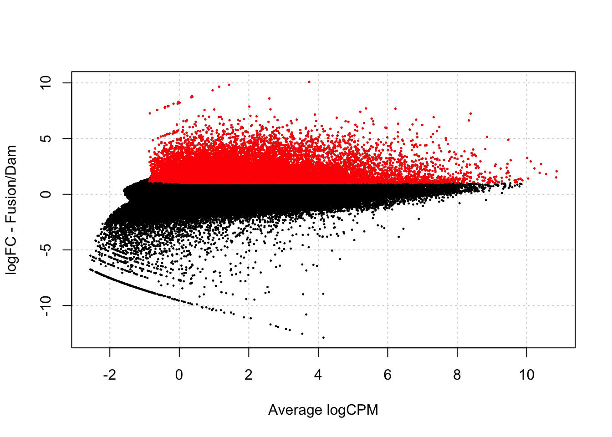
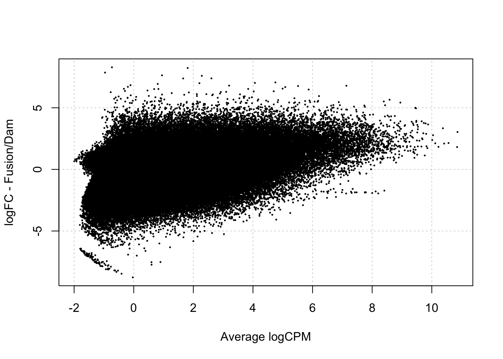

Last updated: 2024-10-01
Checks: 7 0
Knit directory: damsel_paper/analysis/
This reproducible R Markdown analysis was created with workflowr (version 1.7.1). The Checks tab describes the reproducibility checks that were applied when the results were created. The Past versions tab lists the development history.
Great! Since the R Markdown file has been committed to the Git repository, you know the exact version of the code that produced these results.
Great job! The global environment was empty. Objects defined in the global environment can affect the analysis in your R Markdown file in unknown ways. For reproduciblity it’s best to always run the code in an empty environment.
The command set.seed(20240816) was run prior to running
the code in the R Markdown file. Setting a seed ensures that any results
that rely on randomness, e.g. subsampling or permutations, are
reproducible.
Great job! Recording the operating system, R version, and package versions is critical for reproducibility.
Nice! There were no cached chunks for this analysis, so you can be confident that you successfully produced the results during this run.
Great job! Using relative paths to the files within your workflowr project makes it easier to run your code on other machines.
Great! You are using Git for version control. Tracking code development and connecting the code version to the results is critical for reproducibility.
The results in this page were generated with repository version 73f7dc1. See the Past versions tab to see a history of the changes made to the R Markdown and HTML files.
Note that you need to be careful to ensure that all relevant files for
the analysis have been committed to Git prior to generating the results
(you can use wflow_publish or
wflow_git_commit). workflowr only checks the R Markdown
file, but you know if there are other scripts or data files that it
depends on. Below is the status of the Git repository when the results
were generated:
Ignored files:
Ignored: .DS_Store
Ignored: .Rhistory
Ignored: .Rproj.user/
Ignored: data/.DS_Store
Ignored: renv/library/
Ignored: renv/staging/
Untracked files:
Untracked: data/damsel_counts.rds
Untracked: data/damsel_counts_a.rds
Untracked: data/damsel_counts_b.rds
Untracked: data/sd_1_SRR794884-vs-Dam.kde-norm.gatc-FDR0.01.peaks.gff
Untracked: data/sd_2_SRR7948877-vs-Dam.kde-norm.gatc-FDR0.01.peaks.gff
Untracked: data/txdb_genes.rds
Untracked: output/damsel_dm.rds
Untracked: output/damsel_genes.rds
Untracked: output/damsel_peaks.rds
Untracked: output/fp_vissers_peaks.txt
Untracked: output/keep
Untracked: output/lrt_sd.txt
Untracked: output/marshall_peaks.rds
Untracked: output/peaks.txt
Untracked: output/vissers_dm.rds
Untracked: output/vissers_peaks.rds
Untracked: output/vissers_peaks.txt
Untracked: output/vissers_peaks_mod.rds
Untracked: renv/.gitignore
Unstaged changes:
Modified: code/run-Damsel.R
Modified: code/run-Vissers.R
Note that any generated files, e.g. HTML, png, CSS, etc., are not included in this status report because it is ok for generated content to have uncommitted changes.
These are the previous versions of the repository in which changes were
made to the R Markdown (analysis/fp-test.Rmd) and HTML
(docs/fp-test.html) files. If you’ve configured a remote
Git repository (see ?wflow_git_remote), click on the
hyperlinks in the table below to view the files as they were in that
past version.
| File | Version | Author | Date | Message |
|---|---|---|---|---|
| Rmd | 73f7dc1 | caitlinpage | 2024-10-01 | wflow_publish(c("analysis/compare_dm.Rmd", "analysis/compare_peaks.Rmd", |
| Rmd | 08944f8 | caitlinpage | 2024-10-01 | initial commit analysis |
library(Damsel)
library(plyranges)Loading required package: BiocGenerics
Attaching package: 'BiocGenerics'The following objects are masked from 'package:stats':
IQR, mad, sd, var, xtabsThe following objects are masked from 'package:base':
anyDuplicated, aperm, append, as.data.frame, basename, cbind,
colnames, dirname, do.call, duplicated, eval, evalq, Filter, Find,
get, grep, grepl, intersect, is.unsorted, lapply, Map, mapply,
match, mget, order, paste, pmax, pmax.int, pmin, pmin.int,
Position, rank, rbind, Reduce, rownames, sapply, setdiff, table,
tapply, union, unique, unsplit, which.max, which.minLoading required package: IRangesWarning: package 'IRanges' was built under R version 4.4.1Loading required package: S4VectorsWarning: package 'S4Vectors' was built under R version 4.4.1Loading required package: stats4
Attaching package: 'S4Vectors'The following object is masked from 'package:utils':
findMatchesThe following objects are masked from 'package:base':
expand.grid, I, unnameLoading required package: GenomicRangesLoading required package: GenomeInfoDb
Attaching package: 'plyranges'The following object is masked from 'package:IRanges':
sliceThe following object is masked from 'package:stats':
filterlibrary(dplyr)
Attaching package: 'dplyr'The following objects are masked from 'package:plyranges':
between, n, n_distinctThe following objects are masked from 'package:GenomicRanges':
intersect, setdiff, unionThe following object is masked from 'package:GenomeInfoDb':
intersectThe following objects are masked from 'package:IRanges':
collapse, desc, intersect, setdiff, slice, unionThe following objects are masked from 'package:S4Vectors':
first, intersect, rename, setdiff, setequal, unionThe following objects are masked from 'package:BiocGenerics':
combine, intersect, setdiff, unionThe following objects are masked from 'package:stats':
filter, lagThe following objects are masked from 'package:base':
intersect, setdiff, setequal, unionlibrary(ggplot2)
library(BSgenome.Dmelanogaster.UCSC.dm6)Loading required package: BSgenomeLoading required package: BiostringsLoading required package: XVector
Attaching package: 'Biostrings'The following object is masked from 'package:base':
strsplitLoading required package: BiocIOLoading required package: rtracklayer
Attaching package: 'rtracklayer'The following object is masked from 'package:BiocIO':
FileForFormatlibrary(edgeR)Warning: package 'edgeR' was built under R version 4.4.1Loading required package: limmaWarning: package 'limma' was built under R version 4.4.1
Attaching package: 'limma'The following object is masked from 'package:BiocGenerics':
plotMAtest_vissers_dm <- function(damsel_counts) {
matrix <- as.matrix(damsel_counts[, grepl("bam", colnames(damsel_counts), ignore.case = TRUE)])
rownames(matrix) <- damsel_counts$Position
group = c("Dam", "Sd", "Dam", "Sd")
design = model.matrix(~group)
y = DGEList(matrix, group = group)
keep <- rowSums(cpm(y)>=0.5) >= 2
y = y[keep, ,keep.lib.sizes=FALSE]
y = calcNormFactors(y)
y = estimateDisp(y, robust = T, design = design)
fit = glmFit(y, design = design)
lrt = glmLRT(fit, coef=2)
de.Sd <- decideTestsDGE(lrt, lfc = 1)
lrt$table$significant <- de.Sd
vissers_dm <- data.frame(lrt$table)
vissers_dm$significant <- data.frame(de.Sd)$groupSd
vissers_dm
}
test_vissers_peaks <- function(damsel_counts) {
matrix <- as.matrix(damsel_counts[, grepl("bam", colnames(damsel_counts), ignore.case = TRUE)])
rownames(matrix) <- damsel_counts$Position
group = c("Dam", "Sd", "Dam", "Sd")
design = model.matrix(~group)
y = DGEList(matrix, group = group)
keep <- rowSums(cpm(y)>=0.5) >= 2
y = y[keep, ,keep.lib.sizes=FALSE]
y = calcNormFactors(y)
y = estimateDisp(y, robust = T, design = design)
fit = glmFit(y, design = design)
lrt = glmLRT(fit, coef=2)
de.Sd <- decideTestsDGE(lrt, lfc = 1)
lrt$table$significant <- de.Sd
vissers_dm <- data.frame(lrt$table)
vissers_dm$significant <- data.frame(de.Sd)$groupSd
write.table(vissers_dm, file='../output/lrt_sd.txt', quote=F)
write.table(keep, file='../output/keep', quote=F, col.names = FALSE)
system2("python3", args=c("../code/call_peaks.py",
"../output/keep", "../output/lrt_sd.txt", ">",
"../output/fp_vissers_peaks.txt"))
vissers_peaks <- read.table("../output/fp_vissers_peaks.txt")
names(vissers_peaks) <- c('seqnames', 'start', 'end', "tags", 'pen', 'aveLogFC', 'sig')
vissers_peaks
}The Samples are: * D1: Dam1 * F1: Sd1 * D2: Dam2 * F2: Sd2
damsel_counts <- rbind(readRDS("../data/damsel_counts_a.rds"), readRDS("../data/damsel_counts_b.rds"))
gatc_regions <- getGatcRegions(BSgenome.Dmelanogaster.UCSC.dm6::BSgenome.Dmelanogaster.UCSC.dm6)$regionsWarning in .local(x, row.names, optional, ...): 'optional' argument was ignored
Warning in .local(x, row.names, optional, ...): 'optional' argument was ignored
Warning in .local(x, row.names, optional, ...): 'optional' argument was ignored
Warning in .local(x, row.names, optional, ...): 'optional' argument was ignored
Warning in .local(x, row.names, optional, ...): 'optional' argument was ignored
Warning in .local(x, row.names, optional, ...): 'optional' argument was ignored
Warning in .local(x, row.names, optional, ...): 'optional' argument was ignoredWarning in GenomeInfoDb::renameSeqlevels(x = df_, value = newStyle): invalid
seqlevels 'chrM' ignoredhead(damsel_counts) Position seqnames start end width strand dam_1_SRR7948872.BAM
chr2L-82 chr2L-82 chr2L 82 230 149 * 1.0
chr2L-231 chr2L-231 chr2L 231 371 141 * 1.5
chr2L-372 chr2L-372 chr2L 372 539 168 * 2.5
chr2L-540 chr2L-540 chr2L 540 688 149 * 2.0
chr2L-689 chr2L-689 chr2L 689 829 141 * 0.0
chr2L-830 chr2L-830 chr2L 830 997 168 * 0.0
sd_1_SRR7948874.BAM dam_2_SRR7948876.BAM sd_2_SRR7948877.BAM
chr2L-82 0.33 0.0 0.0
chr2L-231 5.67 87.0 57.5
chr2L-372 6.17 88.0 58.5
chr2L-540 4.83 0.0 0.0
chr2L-689 0.00 0.5 0.5
chr2L-830 1.33 4.5 3.5damsel_counts_a <- damsel_counts[,c(1:6,7,9,8,10)]
head(damsel_counts_a) Position seqnames start end width strand dam_1_SRR7948872.BAM
chr2L-82 chr2L-82 chr2L 82 230 149 * 1.0
chr2L-231 chr2L-231 chr2L 231 371 141 * 1.5
chr2L-372 chr2L-372 chr2L 372 539 168 * 2.5
chr2L-540 chr2L-540 chr2L 540 688 149 * 2.0
chr2L-689 chr2L-689 chr2L 689 829 141 * 0.0
chr2L-830 chr2L-830 chr2L 830 997 168 * 0.0
dam_2_SRR7948876.BAM sd_1_SRR7948874.BAM sd_2_SRR7948877.BAM
chr2L-82 0.0 0.33 0.0
chr2L-231 87.0 5.67 57.5
chr2L-372 88.0 6.17 58.5
chr2L-540 0.0 4.83 0.0
chr2L-689 0.5 0.00 0.5
chr2L-830 4.5 1.33 3.5damsel_fp <- testDmRegions(makeDGE(damsel_counts_a, min.samples = 2), gatc_regions)Warning in plot.xy(xy.coords(x, y), type = type, ...): "panel.first" is not a
graphical parameter
damsel_fp %>% group_by(meth_status) %>% summarise(n=n())# A tibble: 3 × 2
meth_status n
<chr> <int>
1 No_sig 129274
2 Not_included 232982
3 Upreg 2139821398/(21398+129274)[1] 0.1420171nrow(damsel_fp)[1] 383654damsel_dm <- readRDS("../output/damsel_dm.rds")
damsel_dm %>% group_by(meth_status) %>% summarise(n=n())# A tibble: 3 × 2
meth_status n
<chr> <int>
1 No_sig 113787
2 Not_included 232982
3 Upreg 36885vissers_fp <- test_vissers_dm(damsel_counts_a)Warning: 'decideTestsDGE' is deprecated.
Use 'decideTests' instead.
See help("Deprecated")vissers_fp %>% group_by(significant) %>% summarise(n=n())# A tibble: 3 × 2
significant n
<int> <int>
1 -1 1112
2 0 148319
3 1 1254both identify significant results
we suspect this is because the significant difference in library size between the replicates creates significance
check for peaks
nrow(identifyPeaks(damsel_fp))[1] 1388nrow(test_vissers_peaks(damsel_counts_a))Warning: 'decideTestsDGE' is deprecated.
Use 'decideTests' instead.
See help("Deprecated")[1] 186damsel_counts_a <- damsel_counts[,c(1:6,7,10,9,8)]
head(damsel_counts_a) Position seqnames start end width strand dam_1_SRR7948872.BAM
chr2L-82 chr2L-82 chr2L 82 230 149 * 1.0
chr2L-231 chr2L-231 chr2L 231 371 141 * 1.5
chr2L-372 chr2L-372 chr2L 372 539 168 * 2.5
chr2L-540 chr2L-540 chr2L 540 688 149 * 2.0
chr2L-689 chr2L-689 chr2L 689 829 141 * 0.0
chr2L-830 chr2L-830 chr2L 830 997 168 * 0.0
sd_2_SRR7948877.BAM dam_2_SRR7948876.BAM sd_1_SRR7948874.BAM
chr2L-82 0.0 0.0 0.33
chr2L-231 57.5 87.0 5.67
chr2L-372 58.5 88.0 6.17
chr2L-540 0.0 0.0 4.83
chr2L-689 0.5 0.5 0.00
chr2L-830 3.5 4.5 1.33damsel_fp <- testDmRegions(makeDGE(damsel_counts_a, min.samples = 2), gatc_regions)Warning in plot.xy(xy.coords(x, y), type = type, ...): "panel.first" is not a
graphical parameter
damsel_fp %>% group_by(meth_status) %>% summarise(n=n())# A tibble: 2 × 2
meth_status n
<chr> <int>
1 No_sig 150672
2 Not_included 232982vissers_fp <- test_vissers_dm(damsel_counts_a)Warning: 'decideTestsDGE' is deprecated.
Use 'decideTests' instead.
See help("Deprecated")vissers_fp %>% group_by(significant) %>% summarise(n=n())# A tibble: 3 × 2
significant n
<int> <int>
1 -1 20346
2 0 110709
3 1 19630nrow(test_vissers_peaks(damsel_counts_a))Warning: 'decideTestsDGE' is deprecated.
Use 'decideTests' instead.
See help("Deprecated")[1] 2286
sessionInfo()R Under development (unstable) (2024-01-17 r85813)
Platform: x86_64-apple-darwin20
Running under: macOS Sonoma 14.1.1
Matrix products: default
BLAS: /Library/Frameworks/R.framework/Versions/4.4-x86_64/Resources/lib/libRblas.0.dylib
LAPACK: /Library/Frameworks/R.framework/Versions/4.4-x86_64/Resources/lib/libRlapack.dylib; LAPACK version 3.12.0
locale:
[1] en_US.UTF-8/en_US.UTF-8/en_US.UTF-8/C/en_US.UTF-8/en_US.UTF-8
time zone: Australia/Melbourne
tzcode source: internal
attached base packages:
[1] stats4 stats graphics grDevices datasets utils methods
[8] base
other attached packages:
[1] edgeR_4.2.1 limma_3.60.4
[3] BSgenome.Dmelanogaster.UCSC.dm6_1.4.1 BSgenome_1.72.0
[5] rtracklayer_1.64.0 BiocIO_1.14.0
[7] Biostrings_2.72.1 XVector_0.44.0
[9] ggplot2_3.5.1 dplyr_1.1.4
[11] plyranges_1.24.0 GenomicRanges_1.56.1
[13] GenomeInfoDb_1.40.1 IRanges_2.38.1
[15] S4Vectors_0.42.1 BiocGenerics_0.50.0
[17] Damsel_1.0.0 workflowr_1.7.1
loaded via a namespace (and not attached):
[1] tidyselect_1.2.1 bitops_1.0-8
[3] fastmap_1.2.0 RCurl_1.98-1.16
[5] GenomicAlignments_1.40.0 promises_1.3.0
[7] XML_3.99-0.17 digest_0.6.35
[9] lifecycle_1.0.4 statmod_1.5.0
[11] processx_3.8.4 magrittr_2.0.3.9000
[13] compiler_4.4.0 rlang_1.1.3
[15] sass_0.4.9 tools_4.4.0
[17] utf8_1.2.4 yaml_2.3.8
[19] knitr_1.46 S4Arrays_1.4.1
[21] curl_5.2.1 DelayedArray_0.30.1
[23] abind_1.4-5 BiocParallel_1.38.0
[25] purrr_1.0.2 withr_3.0.1
[27] grid_4.4.0 fansi_1.0.6
[29] git2r_0.33.0 colorspace_2.1-1
[31] scales_1.3.0 SummarizedExperiment_1.34.0
[33] cli_3.6.2 rmarkdown_2.27
[35] crayon_1.5.3 generics_0.1.3
[37] rstudioapi_0.16.0 httr_1.4.7
[39] rjson_0.2.21 cachem_1.1.0
[41] stringr_1.5.1.9000 splines_4.4.0
[43] zlibbioc_1.50.0 parallel_4.4.0
[45] BiocManager_1.30.23 restfulr_0.0.15
[47] matrixStats_1.3.0 vctrs_0.6.5
[49] Matrix_1.7-0 jsonlite_1.8.8
[51] callr_3.7.6 locfit_1.5-9.10
[53] tidyr_1.3.1 jquerylib_0.1.4
[55] glue_1.7.0 codetools_0.2-20
[57] ps_1.7.6 stringi_1.8.4
[59] gtable_0.3.5 later_1.3.2
[61] UCSC.utils_1.0.0 munsell_0.5.1
[63] tibble_3.2.1 pillar_1.9.0
[65] htmltools_0.5.8.1 GenomeInfoDbData_1.2.12
[67] R6_2.5.1 rprojroot_2.0.4
[69] evaluate_0.23 Biobase_2.64.0
[71] lattice_0.22-6 highr_0.10
[73] Rsamtools_2.20.0 renv_1.0.7
[75] httpuv_1.6.15 bslib_0.7.0
[77] Rcpp_1.0.12 SparseArray_1.4.8
[79] whisker_0.4.1 xfun_0.44
[81] fs_1.6.4 MatrixGenerics_1.16.0
[83] getPass_0.2-4 pkgconfig_2.0.3